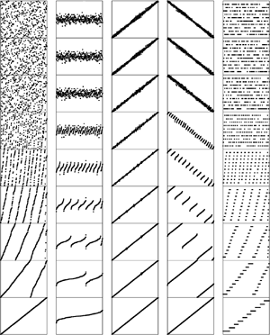

In addition to netting the improvements discussed in Section 8.2, we might achieve further gains by ensuring that the smallest elements in the two arrays are kept in simple variables or machine registers, to avoid unnecessary array accesses. Thus, the inner loop of mergesort can basically be reduced to a comparison (with conditional branch), two pointer increments (k and either i or j), and a test with conditional branch for loop completion. The total number of instructions in the inner loop is slightly higher than that for quicksort, but the instructions are executed only N lg N times, where quicksort's are executed 39 percent more often (or 29 percent with the median-of-three modification). Careful implementation and detailed analysis are required for more precise comparison of the algorithms in particular environments; nonetheless, we do know that mergesort has an inner loop that is slightly longer than that of quicksort. As usual, we must add the caveat that pursuit of improvements of this nature, although irresistible to many programmers, can sometimes lead to marginal gains and should be taken on only after more important considerations have been resolved. In this case, mergesort has the clear advantages over quicksort that it is stable and is guaranteed to run fast (no matter what the input), and the clear disadvantage that it uses extra space proportional to the size of the array. If these factors point to the use of mergesort (and speed is important), then the improvements that we have suggested may be worth considering, along with careful study of the code produced by compilers, the special properties of the machine architecture, and so forth. On the other hand, we must also add the usual caveat that programmers should always have one eye on performance, to avoid costs that are completely unnecessary. All programmers (and authors!) have suffered the embarrassment of having a simple unnoticed characteristic of an implementation dominate all that implementation's other sophisticated mechanisms. It is not unusual for a factor-of-2 improvement in running time to be found when implementations are examined carefully in this way. Frequent testing is the most effective defense against last-minute surprises of this type. We discussed these points at length in Chapter 5, but the allure of premature optimization is so strong that it is worthwhile to reinforce them each time that we study techniques for performance improvement at this level of detail. For mergesort, we are comfortable with optimizing because Properties 8.1 through 8.4 essentially characterize the performance, and hold for all the implementations that we have examined: Their running time is proportional to N log N, and is insensitive to the input (see Figure 8.8); they use extra space; and they can be implemented in a stable manner. Maintaining these while improving the running time is generally not difficult. Figure 8.8. Sorting of various types of files with bottom-up mergesortThe running time for mergesort is insensitive to the input. These diagrams illustrate that the number of passes taken by bottom-up mergesort for files that are random, Gaussian, nearly ordered, nearly reverse ordered, and randomly ordered with 10 distinct key values (left to right) depends only on the file size, no matter what the input values are. This behavior is in sharp contrast to that of quicksort and to that of many other algorithms.  Exercises | |||||||||||||||||||||||||||||||||||||||||||||||||||||||||||||||||||||||||||||||||||

 |